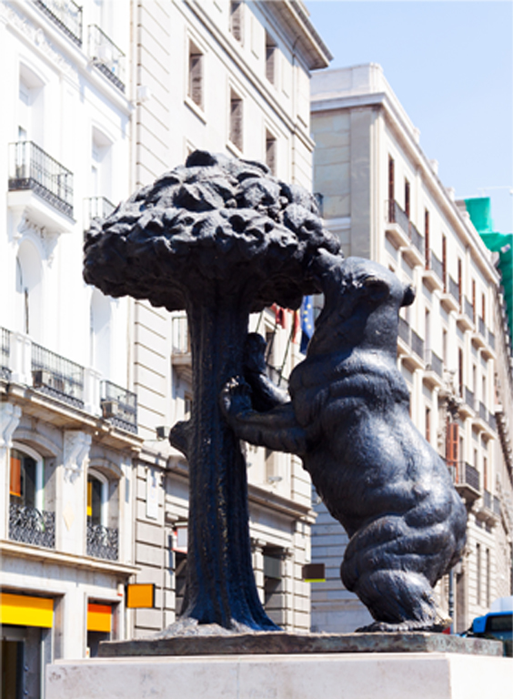

Всичко, въведено в коментар, няма да се визуализира в браузъра.
Мадрид е културният център на страната с великолепни дворци, фонтани, паркове и повече от 100 музея, включително световноизвестните Прадо, Център на изкуствата Кралица София и музеят Тисен-Борнемиса.
Разположен на бреговете на река Мансанарес в централната част на страната, градът е административен център на автономната област Мадридска общност. Като столица на кралството, седалище на правителството и резиденция на краля, Мадрид е също политическият, стопански и културен център на Испания.
Има много църкви, най-красивата от които е новата катедрала Нуестра Сеньора де Алмудена. Мадридската зоологическа градина разполага и с Аквариум и едно от любимите места за прекарване на свободното време на мадридчани. Градът е една от най-красивите столици не само в Европа, но и в света. Икономическият и културният живот в града са съсредоточени на Пасео де ла Кастеляна и улица Алкала. Именно тук се намират най-скъпите магазини и известни ресторанти.
Една от главните културни забележителности на града е музеят Прадо, основан от Мария-Изабела де Браганса, втората жена на Фердинанд VII. През 1819 г. музеят е преместен в сегашното си здание в качеството на Кралски музей. Зданието на музея е проектирано през 1785 г. от архитекта Хуан де Вилянуева, по поръчка на крал Карл III.
Двата други големи музея на Мадрид – Центъра за изкуства „Кралица София“ и Музей Тисен-Борнемиса, заедно с музея Прадо образуват така наречения „златен триъгълник на изкуствата“. В музея „Кралица София“ се намира най-знаменитата картина на Пабло Пикасо „Герника“, както и творби на Салвадор Дали и Хуан Миро. В музея Тисен-Борнемиса се намират картини от различни епохи, започвайки от Ренесанса и завършвайки с творби на известниимпресионисти, сюрреалисти и кубисти. Интерес представлява и колекцията на Кралската академия за изящни изкуства „Сан Фернандо“, която наброява 1300 картини, в това число работи на Диего Веласкес, Рубенс и Франциско Гоя.
H2O ; ax2+bx2=0
H 2 0 ; ax 2 + bx 2 =0
H2O ; ax2+bx2=0
H 2 0 ; ax 2 + bx 2 =0
$
Това е вмъкнат текст
Това е подчертан текст
| Вид храна | Съставки |
|---|---|
| Пица | брашно,вода, мая, домати, сирене, шунка |
| Торта |
брашно, яйца, мляко, масло, плодове |
| Спагети | спагени,домати,бекон, кайма, кашвал |
За повече информация Посетете W3Schools.bg
HTML5 tutorial!